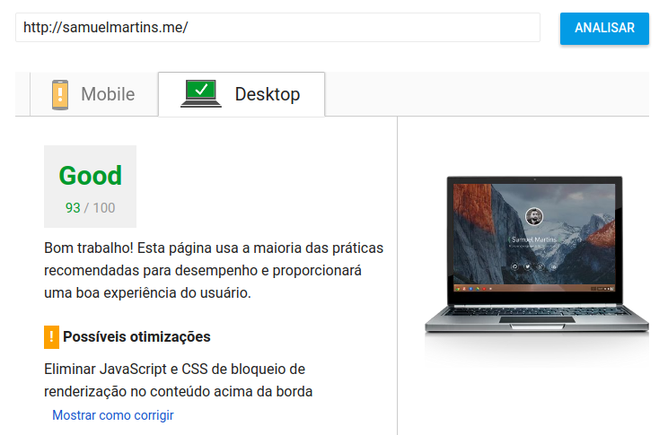

Perfomance no front-end
Como fazer sua aplicação web voar
Sobre mim
Samuel Martins
Analista de sistemas front-end
#TeamBLiP
Porque se preocupar com performance?
Usabilidade
Esse trem é importante demais!
Lentidão na web afasta os usuários
Uso massivo de dispositivos móveis
Celular é o aparelho mais usado para acesso a rede (Pnad, 2014)
Carregar apenas o conteúdo relevante ao usuário
Respeite o back-end que você se comunica
Front-end é a ponte entre o usuário e o servidor
Não deixe o back-end estressado
Importância para o Google
Principalmente para o PageInsights

Estratégias básicas
- CSS no início, JS no fim
-
Concatenar e minificar JS e CSS
- Mas como?!
- Webpack (usado na take)
- Gulp e Grunt
- Ferramentas online (funciona mas é paia)
Estratégias um pouco avançadas
- Comprimir imagens
- Comprimir HTML
- Recursos externos com async ou defer
- Não usar @import do css
- Usar CDNs
Estatégias avançadas
- Não sobrescrever CSS
- Definir largura e altura das imagens
Estratégias muito avançadas
Complexidade de código
O(n), O(n²), Log(n)...
Estratégias muito avançadas mesmo
- Service workers
- Progressive web apps (PWA)
estratégias "não-front-end"
- GZIP
- Brotli
- Multiple hostnames
- HTTP/2 e multiplexação
Pra finalizar...
Qual o ator preferido das abelhas?
R: O MEL Gibson
Contatos
Twitter: @samwew
Github: github.com/samwx
Email: samuelmartins.sw@gmail.com
samuelmartins.me